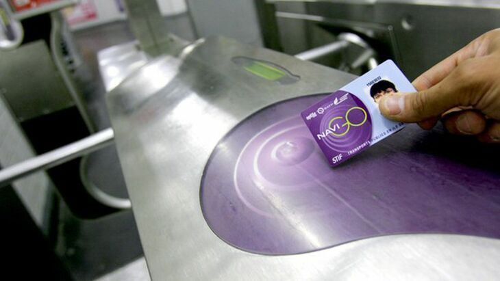

Protocole Navigo
Simulation du protocole de communication des cartes Navigo avec architecture client-serveur.

A propos du projet
Projet academique de simulation du protocole reseau utilise par les cartes Navigo du reseau de transport parisien. L'objectif etait de comprendre et reproduire le fonctionnement des communications carte-terminal.
Le systeme implemente une architecture client-serveur complete avec gestion des abonnements, validation des titres de transport et historique des trajets.
Architecture technique
Le serveur Java gere la logique metier et la communication avec la base de donnees PostgreSQL. Un client Python simule les interactions carte/terminal avec le protocole de communication.
Base de donnees
Conception d'un schema relationnel complet pour gerer les utilisateurs, les titres de transport, les stations et l'historique des validations. Optimisation des requetes pour les operations en temps reel.